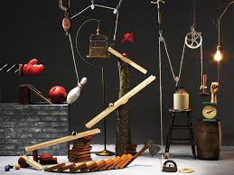

Ra-Tim-Bum Máquina de Goldberg
O projeto Ra-Tim-Bum consiste na construção de uma Máquina de Goldberg, utilizando componentes eletrônicos e estrutura física para demonstrar princípios de física e automação de forma lúdica e criativa. Com os ensinamentos do curso de engenharia da computação, foi aplicado o uso de microcontrolador para aumentar as possibilidades de eventos para o projeto.
Fotos do Projeto
